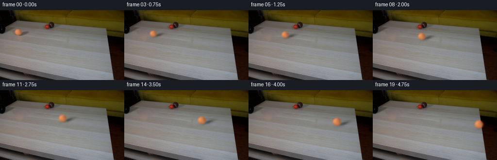
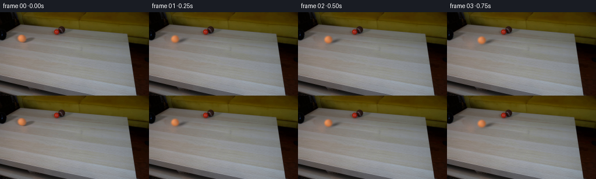

CODING AGENTS AS PIXEL WORLD MODELS
traex/GPT-6.1-Sol · 0012
点击播放 · 原生 RGB 像素
逐轮保存的候选
回放视频、检查图与代码变化。
每份候选均可单独播放。实际图片检查记录在下方工具轨迹中。
候选 01播放与检查图
点击播放 · 原生 RGB 像素


展开代码变化
--- 上一保存版本
+++ 本次保存版本
@@ -0,0 +1,146 @@
+from pathlib import Path
+import numpy as np
+from PIL import Image
+from scipy.ndimage import gaussian_filter
+from scipy.sparse import coo_matrix
+from scipy.sparse.linalg import spsolve
+import artifact_io
+
+CASE = Path(__file__).resolve().parent
+
+
+def clean_table(image):
+ """Continue the local tabletop under the moving ball and its cast shadow."""
+ y, x = np.mgrid[:image.shape[0], :image.shape[1]]
+ erase = (((x - 37.0) / 9.6)**2 + ((y - 45.3) / 8.4)**2 < 1)
+ erase |= (((x - 49.0) / 15.0)**2 + ((y - 47.9) / 5.9)**2 < 1)
+ indices = np.full(erase.shape, -1, int)
+ indices[erase] = np.arange(erase.sum())
+ ys, xs = np.where(erase)
+ rows, cols, vals = [], [], []
+ rhs = np.zeros((len(xs), 3))
+ for k, (yy, xx) in enumerate(zip(ys, xs)):
+ rows.append(k); cols.append(k); vals.append(4.)
+ for dy, dx in [(1, 0), (-1, 0), (0, 1), (0, -1)]:
+ q = indices[yy+dy, xx+dx]
+ if q >= 0:
+ rows.append(k); cols.append(q); vals.append(-1.)
+ else:
+ rhs[k] += image[yy+dy, xx+dx]
+ laplacian = coo_matrix((vals, (rows, cols)), shape=(len(xs), len(xs))).tocsr()
+ result = image.copy()
+ result[erase] = spsolve(laplacian, rhs)
+ rng = np.random.default_rng(471)
+ grain = gaussian_filter(rng.normal(0, 1, erase.shape), .40) * 1.15
+ feather = gaussian_filter(erase.astype(float), 1.1)
+ result[erase] += grain[erase, None] * feather[erase, None]
+ return result
+
+
+# Surface and optical parameters measured from the supplied starting frame.
+CX, CY = 37.14653667, 45.08800635
+RX, RY = 6.238815, 5.95843711
+OPTICAL_BLUR = 1.1745905
+SHADOW_DX, SHADOW_DY = 10.79064273, 2.5973461
+SHADOW_SX, SHADOW_SY = 6.75114447, 1.92738835
+SHADOW_ANGLE, SHADOW_STRENGTH = -.32527194, .41867488
+COLOUR = np.array([
+ [221.74857305, 95.95767051, 25.00141244],
+ [-51.50078720, -31.76395406, -40.05565154],
+ [-55.03650067, -18.70191082, 8.12265748],
+ [-16.65483406, 38.76530389, 64.40381757],
+ [42.23774767, 29.14395685, 26.17016916],
+ [.96593094, .96022489, -.87684646],
+ [8.66532876, -.24622761, 30.97045277],
+ [64.88818686, 16.12504086, -27.68439767],
+])
+
+
+def rotate_to_material(x, y, z, theta):
+ # Roll without sliding along the table's projected long axis.
+ axis = np.array([-.1385, 1., 0.])
+ axis /= np.linalg.norm(axis)
+ c, s = np.cos(theta), np.sin(theta)
+ dot = axis[0]*x + axis[1]*y
+ u = c*x - s*axis[1]*z + (1-c)*dot*axis[0]
+ v = c*y + s*axis[0]*z + (1-c)*dot*axis[1]
+ w = c*z - s*(axis[0]*y-axis[1]*x)
+ return u, v, w
+
+
+def ball_surface(x, y, z, theta):
+ # Illumination remains fixed in camera coordinates while felt rotates.
+ basis = np.stack((np.ones_like(x), x, y, z, x*y,
+ x*x-y*y, x*z, y*z), axis=-1)
+ colour = basis @ COLOUR
+ u, v, w = rotate_to_material(x, y, z, theta)
+ felt = (np.sin(53*u + 39*v - 31*w)*np.sin(47*v - 41*w + 13*u)
+ + .45*np.sin(103*u - 79*v + 71*w))
+ colour += felt[..., None] * np.array([1.25, .95, .7])
+ longitude = np.arctan2(w, u)
+ latitude = np.arcsin(np.clip(v, -1, 1))
+ seam = np.exp(-.5*((latitude-.50*np.sin(2*longitude+.6))/.042)**2)
+ colour += seam[..., None] * np.array([2.8, 3.2, 2.3])
+ return np.clip(colour, 0, 255)
+
+
+def render_ball(background, t):
+ # Parallel tabletop edges set the perspective vanishing point. A ball with
+ # constant world-space rolling speed has increasing image speed and size.
+ vanishing_x, vanishing_y = -477., -26.
+ target_x = 218.5
+ k = (1. - (CX-vanishing_x)/(target_x-vanishing_x)) / 4.75
+ scale = 1. / (1.-k*t)
+ cx = vanishing_x + (CX-vanishing_x)*scale
+ cy = vanishing_y + (CY-vanishing_y)*scale
+ rx, ry = RX*scale, RY*scale
+ theta = ((CX-vanishing_x)/RX)*np.log(scale)*1.12
+ xmin = max(0, int(np.floor(cx-rx-6)))
+ xmax = min(256, int(np.ceil(cx+SHADOW_DX*scale+4*SHADOW_SX*scale+3)))
+ ymin = max(0, int(np.floor(cy-ry-6)))
+ ymax = min(144, int(np.ceil(cy+ry+9)))
+ h, w = ymax-ymin, xmax-xmin
+ ss = 4
+ xx, yy = np.meshgrid(xmin+(np.arange(w*ss)+.5)/ss-.5,
+ ymin+(np.arange(h*ss)+.5)/ss-.5)
+ nx, ny = (xx-cx)/rx, (yy-cy)/ry
+ visible = (nx*nx+ny*ny <= 1.)
+ nz = np.sqrt(np.maximum(0., 1.-nx*nx-ny*ny))
+ colour = ball_surface(nx, ny, nz, theta)
+ alpha = visible.astype(float)
+ sigma = OPTICAL_BLUR * scale**.45 * ss
+ rgba = np.concatenate((colour*alpha[..., None], alpha[..., None]), axis=-1)
+ rgba = gaussian_filter(rgba, (sigma, sigma, 0))
+ rgba = rgba.reshape(h, ss, w, ss, 4).mean((1, 3))
+ cos, sin = np.cos(SHADOW_ANGLE), np.sin(SHADOW_ANGLE)
+ sx, sy = xx-cx-SHADOW_DX*scale, yy-cy-SHADOW_DY*scale
+ u, v = sx*cos + sy*sin, -sx*sin + sy*cos
+ shadow = SHADOW_STRENGTH*np.exp(-.5*((u/(SHADOW_SX*scale))**2
+ +(v/(SHADOW_SY*scale))**2))
+ shadow = shadow.reshape(h, ss, w, ss).mean((1, 3))
+ patch = background[ymin:ymax, xmin:xmax].copy()
+ # The dark space to the right of the table does not receive its shadow.
+ tabletop = np.clip((patch.mean(-1)-45.)/35., 0., 1.)
+ patch *= (1.-shadow*tabletop)[..., None]
+ patch = patch*(1.-rgba[..., 3:4]) + rgba[..., :3]
+ frame = background.copy()
+ frame[ymin:ymax, xmin:xmax] = patch
+ return frame
+
+
+def main():
+ first = np.array(Image.open(CASE/'first_frame.png').convert('RGB'), dtype=np.uint8)
+ background = clean_table(first.astype(float))
+ frames = [first]
+ for i in range(1, 20):
+ # Exposure integration gives a restrained, realistic rolling blur at 4fps.
+ samples = [render_ball(background, i/4.+offset) for offset in (-.018, 0., .018)]
+ frame = np.mean(samples, axis=0)
+ frames.append(np.clip(np.rint(frame), 0, 255).astype(np.uint8))
+ frames = np.stack(frames)
+ assert np.array_equal(frames[0], first)
+ artifact_io.save(frames, CASE)
+
+
+if __name__ == '__main__':
+ main()
可观测工具轨迹
实际执行的命令与返回图片。
命令 1exit 0
/bin/bash -lc 'ls -la && cat prompt.txt && cat GENERATION_RULES.md'
命令 2exit 0
/bin/bash -lc "cat artifact_io.py && python - <<'PY'
from PIL import Image
import numpy as np
im=np.array(Image.open('first_frame.png'))
print(im.shape)
# colored ASCII quantization at 2x2 using named categories
for yy in range(0,144,3):
s=''
for xx in range(0,256,3):
r,g,b=im[yy:yy+3,xx:xx+3].mean((0,1))
if max(r,g,b)<45: c='@'
elif max(r,g,b)<85:c='#'
elif r>1.5*g and r>1.5*b:c='R'
elif r>1.18*g and g>1.10*b:c='O'
elif r>g*1.07 and g>b*1.08:c='w'
elif min(r,g,b)>210:c='.'
elif min(r,g,b)>170:c='-'
elif min(r,g,b)>125:c='+'
else:c='='
s+=c
print(f'{yy:3} {s}')
PY"命令 3exit 0
/bin/bash -lc "python - <<'PY'
import numpy as np
from PIL import Image
from scipy.ndimage import label
im=np.array(Image.open('first_frame.png')).astype(float)
r,g,b=im.transpose(2,0,1)
for name,m in [('red',(r>g*1.6)&(r>b*1.4)&(r>55)),('orange',(r>g*1.15)&(g>b*1.2)&(r>75))]:
ll,n=label(m)
print(name)
for k in range(1,n+1):
y,x=np.where(ll==k)
if len(x)>7:print(len(x),(x.min(),y.min(),x.max(),y.max()),'mean RGB',im[y,x].mean(0))
print('Crop by color')
for y in range(15,61):
s=''
for x in range(14,131):
r,g,b=im[y,x]
if max(r,g,b)<20:c=' '
elif max(r,g,b)<40:c='.'
elif r>g*1.6 and r>b*1.4:c='R' if r>110 else 'r'
elif r>g*1.15 and g>b*1.2 and r>75:c='O'
elif max(r,g,b)<65:c=':'
elif max(r,g,b)<90:c=';'
elif max(r,g,b)<115:c='x'
elif max(r,g,b)<140:c='o'
elif max(r,g,b)<165:c='+'
elif max(r,g,b)<190:c='*'
else:c='#'
s+=c
print(f'{y:3} {s}')
print('Patch tuples')
for y in range(24,43,2):
print(y,[(x,tuple(im[y,x].astype(int))) for x in range(77,116,3)])
PY"命令 4exit 0
/bin/bash -lc "python - <<'PY'
from PIL import Image
import numpy as np
im=np.array(Image.open('first_frame.png'))
a=im.mean(2)
chars=' .,:;irsXA253hMHGS#9B&@'
for y in range(0,62):
print(f'{y:02} '+''.join(chars[min(int(v/256*len(chars)),len(chars)-1)] for v in a[y,:150]))
PY"命令 5exit 0
/bin/bash -lc "python - <<'PY'
from PIL import Image
import numpy as np
im=np.array(Image.open('first_frame.png')).astype(float)
# detailed crop orange
for y in range(33,58):
print(f'{y:2} '+''.join(f'{int(v):3} ' for v in im[y,25:58,0]))
print('Blue channel')
for y in range(34,56):
print(f'{y:2} '+''.join(f'{int(v):3} ' for v in im[y,25:58,2]))
print('coordinates of dark areas at y')
for y in [0,5,10,15,20,25,30,35,40,45,48,50]:
print(y,[(x,im[y,x].astype(int).tolist()) for x in range(0,51,3)])
PY"命令 6exit 0
/bin/bash -lc "python - <<'PY'
import numpy as np
from PIL import Image
im=np.asarray(Image.open('first_frame.png'))
for y in range(0,144,6):
z=im[y].mean(1)
runs=np.where(z>70)[0]
print(y, (runs.min(),runs.max()) if len(runs) else None, [(x, im[y,x].tolist()) for x in [150,180,200,210,215,220,225,230,235,240]])
print('region left detail colors ascii')
for y in range(0,55):
s=''
for x in range(0,60):
r,g,b=im[y,x].astype(float)
v=(r+g+b)/3
c=' ' if v<5 else '.' if v<15 else ':' if v<30 else '-' if v<50 else '=' if v<70 else '+' if v<90 else 'x' if v<110 else 'X' if v<130 else 'O' if v<160 else '#'
if r>g*1.6 and r>120:c='R'
s+=c
print('%02d '%y+s)
PY"命令 7exit 0
/bin/bash -lc "python - <<'PY'
import importlib.util
for x in ['numpy','scipy','PIL','cv2']:print(x, bool(importlib.util.find_spec(x)))
from PIL import Image
import numpy as np
im=np.array(Image.open('first_frame.png'))
for y in range(39,52):
print(y, im[y,30:45].tolist())
PY"命令 8exit 0
/bin/bash -lc "cat > .tmp/fit.py <<'PY'
import numpy as np
from PIL import Image
import cv2
from scipy.ndimage import gaussian_filter
from scipy.optimize import least_squares
im=np.array(Image.open('first_frame.png')).astype(float)
Y,X=np.mgrid[:144,:256]
m=((((X-37)/9.0)**2+((Y-45.1)/8.0)**2)<1)|((((X-48.5)/13)**2+((Y-47.8)/5.0)**2)<1)
# inpaint both shadow and sphere
bg=cv2.inpaint(im.astype('uint8'), m.astype('uint8')*255, 4, cv2.INPAINT_TELEA).astype(float)
Image.fromarray(bg.astype('uint8')).save('.tmp/background.png')
np.save('.tmp/background.npy', bg)
# fit optical source from original itself
s=4
x0,y0,w,h=24,35,40,23
xx,yy=np.meshgrid(x0+(np.arange(w*s)+.5)/s-.5,y0+(np.arange(h*s)+.5)/s-.5)
target=im[y0:y0+h,x0:x0+w]
b=bg[y0:y0+h,x0:x0+w]
def down(a):return a.reshape(h,s,w,s).mean((1,3))
def features(p):
cx,cy,rx,ry,blur,dx,dy,sx,sy,angle,opacity=p
x=(xx-cx)/rx;y=(yy-cy)/ry
z=np.sqrt(np.maximum(0,1-x*x-y*y));a=(x*x+y*y<=1).astype(float)
ft=np.stack([a,a*x,a*y,a*z],-1)
ft=gaussian_filter(ft,(blur*s,blur*s,0))
ft=ft.reshape(h,s,w,s,4).mean((1,3))
A=ft[:,:,0]
u=(xx-cx-dx)*np.cos(angle)+(yy-cy-dy)*np.sin(angle)
v=-(xx-cx-dx)*np.sin(angle)+(yy-cy-dy)*np.cos(angle)
sh=down(opacity*np.exp(-.5*((u/sx)**2+(v/sy)**2)))
beneath=b*(1-sh[...,None])
offset=beneath*(1-A[:,:,None])
co=np.linalg.lstsq(ft.reshape(-1,4),(target-offset).reshape(-1,3),rcond=None)[0]
out=offset+ft@co
return out,co,sh,A
def err(p):
out,co,_,_=features(p)
return (out-target).flatten()
p=[37,45.1,6.4,6.4,.6,10,1.8,5.7,2.1,-.3,.32]
res=least_squares(err,p,bounds=([36,44,5.7,5.7,.2,6,-1,3,1,-.8,.1],[38,46,7.5,7.5,1.25,13,4,9,4,.1,.6]),max_nfev=65)
out,co,sh,a=features(res.x)
print('params',res.x,'coeff',co,'rmse',np.mean((out-target)**2)**.5)
print('unmasked inpaint change',np.max(np.abs(im[~m]-bg[~m])))
print('source fit range',out.min(0).min(0),out.max(0).max(0))
np.savez('.tmp/fit.npz',p=res.x,co=co)
pred=bg.copy();pred[y0:y0+h,x0:x0+w]=out
Image.fromarray(np.uint8(np.clip(pred,0,255))).save('.tmp/source_reconstructed.png')
for name,arr in [('source',im),('bg',bg),('fit',pred)]:
print(name)
for y in [38,40,42,44,46,48,50,52]:print(y,arr[y,28:60:2,0].astype(int))
PY
OPENBLAS_NUM_THREADS=1 python .tmp/fit.py"命令 9exit 0
/bin/bash -lc "cat > .tmp/bg.py <<'PY'
import numpy as np
from PIL import Image
from scipy.ndimage import gaussian_filter, binary_dilation
from scipy.sparse import coo_matrix
from scipy.sparse.linalg import spsolve
im=np.array(Image.open('first_frame.png')).astype(float)
y,x=np.mgrid[:144,:256]
m=((((x-37.0)/9.6)**2+((y-45.3)/8.4)**2)<1)|((((x-49)/15)**2+((y-47.9)/5.9)**2)<1)
# harmonic continuation of the wood only in a small erased footprint
idx=np.full(m.shape,-1,int);idx[m]=np.arange(m.sum())
Y,X=np.where(m);n=len(X);ii=[];jj=[];val=[];rhs=np.zeros((n,3))
for k,(yy,xx) in enumerate(zip(Y,X)):
ii.append(k);jj.append(k);val.append(4)
for dy,dx in [(1,0),(-1,0),(0,1),(0,-1)]:
q=idx[yy+dy,xx+dx]
if q>=0:ii.append(k);jj.append(q);val.append(-1)
else:rhs[k]+=im[yy+dy,xx+dx]
mat=coo_matrix((val,(ii,jj)),shape=(n,n)).tocsr()
bg=im.copy();bg[m]=spsolve(mat,rhs)
rng=np.random.default_rng(471)
noise=gaussian_filter(rng.normal(0,1,(144,256)),.40)*1.15
inside=np.clip(gaussian_filter(m.astype(float),1.1),0,1)
bg[m]+=noise[m,None]*inside[m,None]
np.save('.tmp/background.npy',bg)
Image.fromarray(bg.clip(0,255).astype('uint8')).save('.tmp/background.png')
print(m.sum())
for y in range(38,55,2):print(y,bg[y,28:66:3].astype(int).tolist())
PY
python .tmp/bg.py"命令 10exit 0
/bin/bash -lc "cat > .tmp/fit2.py <<'PY'
import numpy as np
from PIL import Image
from scipy.ndimage import gaussian_filter
from scipy.optimize import least_squares
im=np.array(Image.open('first_frame.png')).astype(float)
bg=np.load('.tmp/background.npy')
s=4;x0,y0,w,h=24,35,43,24
xx,yy=np.meshgrid(x0+(np.arange(w*s)+.5)/s-.5,y0+(np.arange(h*s)+.5)/s-.5)
target=im[y0:y0+h,x0:x0+w];b=bg[y0:y0+h,x0:x0+w]
def down(a):return a.reshape(h,s,w,s).mean((1,3))
def features(p):
cx,cy,rx,ry,blur,dx,dy,sx,sy,angle,opacity=p
x=(xx-cx)/rx;y=(yy-cy)/ry
z=np.sqrt(np.maximum(0,1-x*x-y*y));a=(x*x+y*y<=1).astype(float)
ft=np.stack([a,a*x,a*y,a*z,a*x*y,a*(x*x-y*y),a*x*z,a*y*z],-1)
ft=gaussian_filter(ft,(blur*s,blur*s,0))
ft=ft.reshape(h,s,w,s,8).mean((1,3))
A=ft[:,:,0]
u=(xx-cx-dx)*np.cos(angle)+(yy-cy-dy)*np.sin(angle)
v=-(xx-cx-dx)*np.sin(angle)+(yy-cy-dy)*np.cos(angle)
sh=down(opacity*np.exp(-.5*((u/sx)**2+(v/sy)**2)))
beneath=b*(1-sh[...,None])
offset=beneath*(1-A[:,:,None])
co=np.linalg.lstsq(ft.reshape(-1,8),(target-offset).reshape(-1,3),rcond=None)[0]
out=offset+ft@co
return out,co,sh,A
def err(p):
out,co,_,_=features(p)
# very mild regularization of angular model
return np.concatenate(((out-target).flatten(), .3*co[4:].flatten()))
p=[37.05,45.18,6.42,6.06,.85,10.28,2.94,6.45,1.97,-.32,.41]
res=least_squares(err,p,bounds=([36.7,44.7,5.9,5.8,.45,8,1.5,4,1.2,-.65,.2],[37.4,45.6,6.9,6.8,1.3,12.5,4,8,3,.0,.5]),max_nfev=80)
out,co,sh,a=features(res.x)
print('params',res.x,'coeff',co,'rmse',np.mean((out-target)**2)**.5)
np.savez('.tmp/fit2.npz',p=res.x,co=co)
pred=bg.copy();pred[y0:y0+h,x0:x0+w]=out
Image.fromarray(np.uint8(np.clip(pred,0,255))).save('.tmp/source_reconstructed2.png')
# parameterized brightness values at coords center and extremes
for y in [-.8,0,.8]:
print('lat',y)
for x in [-.8,0,.8]:
if x*x+y*y<1:
z=np.sqrt(1-x*x-y*y); print(x,np.array([1,x,y,z,x*y,x*x-y*y,x*z,y*z])@co)
print('pixel residual max',np.max(abs(out-target)), 'central res',np.std((out-target)[a>.8],axis=0))
PY
OPENBLAS_NUM_THREADS=1 python .tmp/fit2.py"命令 11exit 0
/bin/bash -lc "cat > generate.py <<'PY'
from pathlib import Path
import numpy as np
from PIL import Image
from scipy.ndimage import gaussian_filter
from scipy.sparse import coo_matrix
from scipy.sparse.linalg import spsolve
import artifact_io
CASE = Path(__file__).resolve().parent
def clean_table(image):
\"\"\"Continue the local tabletop under the moving ball and its cast shadow.\"\"\"
y, x = np.mgrid[:image.shape[0], :image.shape[1]]
erase = (((x - 37.0) / 9.6)**2 + ((y - 45.3) / 8.4)**2 < 1)
erase |= (((x - 49.0) / 15.0)**2 + ((y - 47.9) / 5.9)**2 < 1)
indices = np.full(erase.shape, -1, int)
indices[erase] = np.arange(erase.sum())
ys, xs = np.where(erase)
rows, cols, vals = [], [], []
rhs = np.zeros((len(xs), 3))
for k, (yy, xx) in enumerate(zip(ys, xs)):
rows.append(k); cols.append(k); vals.append(4.)
for dy, dx in [(1, 0), (-1, 0), (0, 1), (0, -1)]:
q = indices[yy+dy, xx+dx]
if q >= 0:
rows.append(k); cols.append(q); vals.append(-1.)
else:
rhs[k] += image[yy+dy, xx+dx]
laplacian = coo_matrix((vals, (rows, cols)), shape=(len(xs), len(xs))).tocsr()
result = image.copy()
result[erase] = spsolve(laplacian, rhs)
rng = np.random.default_rng(471)
grain = gaussian_filter(rng.normal(0, 1, erase.shape), .40) * 1.15
feather = gaussian_filter(erase.astype(float), 1.1)
result[erase] += grain[erase, None] * feather[erase, None]
return result
# Surface and optical parameters measured from the supplied starting frame.
CX, CY = 37.14653667, 45.08800635
RX, RY = 6.238815, 5.95843711
OPTICAL_BLUR = 1.1745905
SHADOW_DX, SHADOW_DY = 10.79064273, 2.5973461
SHADOW_SX, SHADOW_SY = 6.75114447, 1.92738835
SHADOW_ANGLE, SHADOW_STRENGTH = -.32527194, .41867488
COLOUR = np.array([
[221.74857305, 95.95767051, 25.00141244],
[-51.50078720, -31.76395406, -40.05565154],
[-55.03650067, -18.70191082, 8.12265748],
[-16.65483406, 38.76530389, 64.40381757],
[42.23774767, 29.14395685, 26.17016916],
[.96593094, .96022489, -.87684646],
[8.66532876, -.24622761, 30.97045277],
[64.88818686, 16.12504086, -27.68439767],
])
def rotate_to_material(x, y, z, theta):
# Roll without sliding along the table's projected long axis.
axis = np.array([-.1385, 1., 0.])
axis /= np.linalg.norm(axis)
c, s = np.cos(theta), np.sin(theta)
dot = axis[0]*x + axis[1]*y
u = c*x - s*axis[1]*z + (1-c)*dot*axis[0]
v = c*y + s*axis[0]*z + (1-c)*dot*axis[1]
w = c*z - s*(axis[0]*y-axis[1]*x)
return u, v, w
def ball_surface(x, y, z, theta):
# Illumination remains fixed in camera coordinates while felt rotates.
basis = np.stack((np.ones_like(x), x, y, z, x*y,
x*x-y*y, x*z, y*z), axis=-1)
colour = basis @ COLOUR
u, v, w = rotate_to_material(x, y, z, theta)
felt = (np.sin(53*u + 39*v - 31*w)*np.sin(47*v - 41*w + 13*u)
+ .45*np.sin(103*u - 79*v + 71*w))
colour += felt[..., None] * np.array([1.25, .95, .7])
longitude = np.arctan2(w, u)
latitude = np.arcsin(np.clip(v, -1, 1))
seam = np.exp(-.5*((latitude-.50*np.sin(2*longitude+.6))/.042)**2)
colour += seam[..., None] * np.array([2.8, 3.2, 2.3])
return np.clip(colour, 0, 255)
def render_ball(background, t):
# Parallel tabletop edges set the perspective vanishing point. A ball with
# constant world-space rolling speed has increasing image speed and size.
vanishing_x, vanishing_y = -477., -26.
target_x = 218.5
k = (1. - (CX-vanishing_x)/(target_x-vanishing_x)) / 4.75
scale = 1. / (1.-k*t)
cx = vanishing_x + (CX-vanishing_x)*scale
cy = vanishing_y + (CY-vanishing_y)*scale
rx, ry = RX*scale, RY*scale
theta = ((CX-vanishing_x)/RX)*np.log(scale)*1.12
xmin = max(0, int(np.floor(cx-rx-6)))
xmax = min(256, int(np.ceil(cx+SHADOW_DX*scale+4*SHADOW_SX*scale+3)))
ymin = max(0, int(np.floor(cy-ry-6)))
ymax = min(144, int(np.ceil(cy+ry+9)))
h, w = ymax-ymin, xmax-xmin
ss = 4
xx, yy = np.meshgrid(xmin+(np.arange(w*ss)+.5)/ss-.5,
ymin+(np.arange(h*ss)+.5)/ss-.5)
nx, ny = (xx-cx)/rx, (yy-cy)/ry
visible = (nx*nx+ny*ny <= 1.)
nz = np.sqrt(np.maximum(0., 1.-nx*nx-ny*ny))
colour = ball_surface(nx, ny, nz, theta)
alpha = visible.astype(float)
sigma = OPTICAL_BLUR * scale**.45 * ss
rgba = np.concatenate((colour*alpha[..., None], alpha[..., None]), axis=-1)
rgba = gaussian_filter(rgba, (sigma, sigma, 0))
rgba = rgba.reshape(h, ss, w, ss, 4).mean((1, 3))
cos, sin = np.cos(SHADOW_ANGLE), np.sin(SHADOW_ANGLE)
sx, sy = xx-cx-SHADOW_DX*scale, yy-cy-SHADOW_DY*scale
u, v = sx*cos + sy*sin, -sx*sin + sy*cos
shadow = SHADOW_STRENGTH*np.exp(-.5*((u/(SHADOW_SX*scale))**2
+(v/(SHADOW_SY*scale))**2))
shadow = shadow.reshape(h, ss, w, ss).mean((1, 3))
patch = background[ymin:ymax, xmin:xmax].copy()
# The dark space to the right of the table does not receive its shadow.
tabletop = np.clip((patch.mean(-1)-45.)/35., 0., 1.)
patch *= (1.-shadow*tabletop)[..., None]
patch = patch*(1.-rgba[..., 3:4]) + rgba[..., :3]
frame = background.copy()
frame[ymin:ymax, xmin:xmax] = patch
return frame
def main():
first = np.array(Image.open(CASE/'first_frame.png').convert('RGB'), dtype=np.uint8)
background = clean_table(first.astype(float))
frames = [first]
for i in range(1, 20):
# Exposure integration gives a restrained, realistic rolling blur at 4fps.
samples = [render_ball(background, i/4.+offset) for offset in (-.018, 0., .018)]
frame = np.mean(samples, axis=0)
frames.append(np.clip(np.rint(frame), 0, 255).astype(np.uint8))
frames = np.stack(frames)
assert np.array_equal(frames[0], first)
artifact_io.save(frames, CASE)
if __name__ == '__main__':
main()
PY
OPENBLAS_NUM_THREADS=1 python generate.py
python - <<'PY'
from pathlib import Path
from PIL import Image
import numpy as np
f=np.stack([np.asarray(Image.open(p)) for p in sorted(Path('frames').glob('*.png'))])
print(f.shape, f.dtype, 'first exact',np.array_equal(f[0],np.asarray(Image.open('first_frame.png'))))
for i in [0,1,2,5,10,15,19]:
im=f[i].astype(float);r,g,b=im.transpose(2,0,1)
m=(r>g*1.50)&(r>b*1.6)&(r>155)
ys,xs=np.where(m)
print(i,'orange centroid', (xs.mean(),ys.mean()),'bounds',(xs.min(),ys.min(),xs.max(),ys.max()),'pixels',len(xs),'range',im[ys,xs].mean(0).round(1))
print('per-frame changed',[np.count_nonzero(np.any(f[i]"'!=f[i-1],axis=-1)) for i in range(1,20)])
PY'保存候选 1 份；完成命令 11 次；可验证图片返回 0 张。原始 API 响应与完整日志保留在本地。